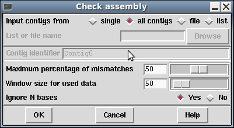

The Check Assembly routine (which is invoked from the gap5 View menu) is used to check contigs for potentially misassembled readings by comparing them against the segment of the consensus which they overlap. It simply slides a small window along the sequence identifying regions of high disagreement between that portion of sequence and the consensus. Results are displayed in the Output Window and plotted on the main diagonal in the Contig Comparator. See section Contig Comparator.
From the Contig Comparator the user can invoke the Contig Editor to examine the alignment of any problem reading. See section Editing in gap5. If the reading appears to be correctly positioned the user can either edit it, or instead select the name to add it to the "readings" list for subsequent disassembly or removal.

Users select either to search only one contig ("single"), all contigs ("all contigs"), or a subset of contigs contained in a "file" or a "list". If "file" or "list" is selected the "browse" button will be activated and clicking on it will invoke a file or list browser. If a single contig is selected the "Contig identifier" dialogue will be activated and users should enter a contig name.
The percentage disagreement and over what size of window are both configurable parameters. Additionally there is a parameter to control whether N bases in the sequence should be considered as disagreements or not. The choice will depend on whether you are looking for sequences that appear to be in the wrong place (ignore Ns) or simply sequences that appear to have a large number of incorrect base calls (keep Ns).
The "Information" window produced by selecting "Information" from the Contig Comparator "Results" menu produces a summary of the results sorted in order os percentage mismatch.
By clicking with the right mouse button on results plotted in the Contig Comparator a pop-up menu is revealed which can be used to invoke the Contig Editor (see section Editing in gap4). The editor will start up with the cursor positioned on the problem reading. If the reading is found to be misplaced it can be marked for removal from within the Editor (see section Remove Reading). However, prior to this it may be beneficial to use some of the other analyses such as Find internal joins (see section Find Internal Joins) and Find repeats (see section Find Repeats), which may help to find its correct location. Both of these functions produce results plotted in the Contig Comparator (see section Contig Comparator) and any alternative locations will give matches on the same vertical or horizontal projection as the problem reading.